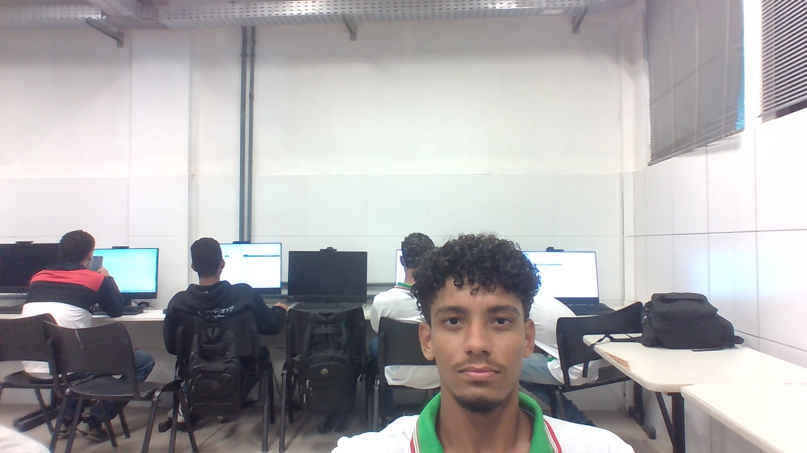

Aluno:
Luan Edgar

Turma: 921C
Curso: Desenvolvimento de Sistemas
Instituição: IFAL
Características:
Tenho 15 anos
Faço bastante esportes
Gosto de conversar bastante tipo conhecer todo mundo mesmo
me dedicando bastante aos estudos
Gosto de aprender varias coisas
No Curso Estou Aprendendo:
Programação Web
Fundamentos da Informática
Introdução a informática
Nos proximos anos serão adicionadas mais materias
Esse foi o meu Resumo
improvisei em algumas coisas pois não pude salvar o meu antigo trabalho.
Atividades Da Minha Pagina Pessoal